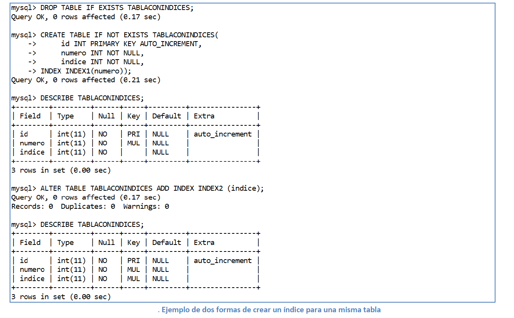

Se denomina índice a una secuencia ordenada de datos, únicos o no, procedentes de una o más columnas de una tabla.
El SGBD almacena el índice internamente, muchas veces creándolos de forma única y los usa para acelerar multitud de operaciones, especialmente las búsqueda de datos cuando en una cláusula WHERE se emplean las columnas que forman el índice, la agrupación y la ordenación.
Los índices ocupan espacio en la base de datos, cuantas más filas haya en la tabla a la que está asociado, mayor será el número de entradas en el índice y por lo tanto su tamaño.
A cambio, operaciones que podrían necesitar varios minutos, cuando se opera con tablas que contienen decenas o cientos de miles de filas se ejecutan en pocos segundos..
Debe existir por tanto un equilibrio entre la ocupación del disco y la mejora de rendimiento. Lo aconsejable es usar índices únicamente en aquellas columnas que se utilicen con mayor frecuencia en las búsquedas y selección de filas.
Los índices mejoran el tiempo de recuperación de los datos en las consultas realizadas contra nuestra base de datos.
Pero los índices no son todo ventajas, la creación de índices implica un aumento en el tiempo de ejecución sobre aquellas consultas de inserción, actualización y eliminación realizadas sobre los datos afectados por el índice (ya que tendrán que actualizarlo). Del mismo modo, los índices necesitan un espacio para almacenarse, por lo que también tienen un coste adicional en forma de espacio en disco.
La construcción de los índices es el primer paso para realizar optimizaciones en las consultas realizadas contra nuestra base de datos. Por ello, es importante conocer bien su funcionamiento y los efectos colaterales que pueden producir.
MySQL emplea los índices para encontrar las filas que contienen los valores específicos de las columnas empleadas en la consulta de una forma más rápida. Si no existiesen índices, MySQL empezaría buscando por la primera fila de la tabla hasta la última buscando aquellas filas que cumplen los valores establecidos para las columnas empleadas en la consulta. Esto implica que, cuanto más filas tenga la tabla, más tiempo tardará en realizar la consulta. En cambio, si la tabla contiene índices en las columnas empleadas en la consulta, MySQL tendría una referencia directa hacia los datos sin necesidad de recorrer secuencialmente todos ellos.
En general, MySQL emplea los índices para las siguientes acciones:
- Encontrar las filas que cumplen la condición WHERE de la consulta cuyas columnas estén indexadas.
- Para recuperar las filas de otras tablas cuando se emplean operaciones de tipo JOIN. Para ello, es importante que los índices sean del mismo tipo y tamaño ya que aumentará la eficiencia de la búsqueda. Por ejemplo: una operación de tipo JOIN sobre dos columnas que tengan un índice del tipo INT(10).
- Disminuir el tiempo de ejecución de las consultas con ordenación (ORDER BY) o agrupamiento (GROUP BY) si todas las columnas presentes en los criterios forman parte de un índice.
- Si la consulta emplea una condición simple cuya columna de la condición está indexada, las filas serán recuperadas directamente a partir del índice, sin pasar a consultar la tabla.
A continuación, vamos a analizar los distintos tipos de índices que se pueden crear y las condiciones que deben cumplir cada uno de ellos:
- INDEX (NON-UNIQUE): este tipo de índice se refiere a un índice normal, no único. Esto implica que admite valores duplicados para la columna (o columnas) que componen el índice. No aplica ninguna restricción especial a los datos de la columna (o columnas) que componen el índice sino que se emplea simplemente para mejorar el tiempo de ejecución de las consultas.
- UNIQUE: este tipo de índice se refiere a un índice en el que todas las columnas deben tener un valor único. Esto implica que no admite valores duplicados para la columna (o columnas) que componen el índice. Aplica la restricción de que los datos de la columna (o columnas) deben tener un valor único.
- PRIMARY: este tipo de índice se refiere a un índice en el que todas las columnas deben tener un valor único (al igual que en el caso del índice UNIQUE) pero con la limitación de que sólo puede existir un índice PRIMARY en cada una de las tablas. Aplica la restricción de que los datos de la columna (o columnas) deben tener un valor único.
- FULLTEXT: estos índices se emplean para realizar búsquedas sobre texto (CHAR, VARCHAR y TEXT). Estos índices se componen por todas las palabras que están contenidas en la columna (o columnas) que contienen el índice. No aplica ninguna restricción especial a los datos de la columna (o columnas) que componen el índice sino que se emplea simplemente para mejorar el tiempo de ejecución de las consultas. Este tipo de índices sólo están soportados por InnoDB y MyISAM en MySQL 5.7 y superiores.
- SPATIAL: estos índices se emplean para realizar búsquedas sobre datos que componen formas geométricas representadas en el espacio. Este tipo de índices sólo están soportados por InnoDB y MyISAM en MySQL 5.7 y superiores.
Es importante destacar que todos estos índices pueden construirse empleando una o más columnas. Del mismo modo, el orden de las columnas que se especifique al construir el orden es relevante para todos los índices menos para el FULLTEXT (ya que este índice mira en TODAS las columnas que componen el índice).
El siguiente código muestra la creación de dos índices dentro de una tabla denominada ‘TABLACONINDICES’, primero como parte de la orden ‘CREATE TABLE’ y después de forma separada mediante el comando ‘ALTER TABLE’:

Para borrar un índice se utiliza el comando ‘DROP INDEX index_name ON tbl_name’, que también puede ser mapeado a un comando ‘ALTER TABLE’ mediante la opción ‘DROP INDEX index_name’.
Hay que recordar que los índices representan un camino rápido hacia la información de una tabla, pero que no hay abusar de ellos, ya que favorecen la búsqueda, pero penalizan las operaciones de inserción, modificación y actualización de datos.
¿Por qué no crear índices para todas las columnas?
No todas las soluciones son perfectas y tampoco lo iba a ser la creación de índices. La creación de índices también tiene efectos negativos. Estos efectos negativos es bueno conocerlos ya que pueden ocasionar efectos colaterales no deseados.
Uno de ellos es que las operaciones de inserción, actualización y eliminación que se realicen sobre tablas que tengan algún tipo de índice (o índices), verán aumentado su tiempo de ejecución. Esto es debido a que, después de cada una de estas operaciones, es necesario actualizar el índice (o los índices) presentes en la tabla sobre la que se ha realizado alguna de las operaciones anteriores.
Otro efecto negativo es que los índices deben ser almacenados en algún lugar. Para ello, se empleará espacio de disco. Por ello, el uso de índices aumenta el tamaño de la base de datos en mayor o menor medida.